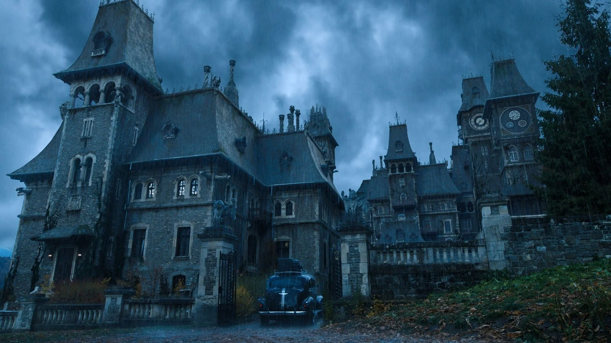

Você finalmente chegou à Nevermore Academy, a escola para excluídos. Wandinha Addams está no dormitório ao lado. No seu primeiro dia, :Você ouve rumores sobre um monstro que anda pela floresta de Jericho e resolve investigar por conta própria.